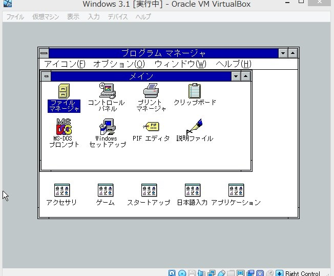

Dynabook L20でWindows 2000をインストール
そもそも動くの? ... はい
手順
-
CDからWIndows 2000 をインストール
-
ドライバのインストール
LANドライバ
dynabook ダウンロードページから型番を検索しrealtek gigabit ethernet family xp用ドライバの自己解凍式プログラムをダウンロードし、 7-zipなどで解凍する、その中に2k用ドライバがあるのでそれをデバイスマネージャからインストール
オーディオ
kb888111を黒翼猫のコンピュータ日記 2nd Edition - Windows 2000 BlogからリンクしてあるWindows Legacy Updateというサイトからダウンロード
これを適用すると、再起動時にプラグアンドプレイでIntel HD Audioが自動的に認識される。
豆 kb888111無しでオーディオを認識できない原因 https://www.tekwind.co.jp/ASU/faq/entry_28.php
ビデオドライバ
http://blog.livedoor.jp/blackwingcat/archives/1143494.html
このサイトからリンクされているインテルのサイトからzipをダウンロードしてsetup.exeを実行する
Windows Update
Windows Updateは2000以降のWindowsでできる模様
IE6,SP4 SRP v2,ルート証明書の更新の順でインストールする。 IE6以外はWindows legucy Updateというサイトからダウンロード
ソフトウェア FFFTP 1.98g VmwareでMS-DOS 6.2 or IBM PC-DOS 7.0/Jをインストールする

 最初は画面の指示に従ってインストールを進めます。
MS-DOSのみインストール後にWindowsで作れるDOS起動ディスクから立ち上げ、cドライブでedit c:¥config.sysと入力する。
最初は画面の指示に従ってインストールを進めます。
MS-DOSのみインストール後にWindowsで作れるDOS起動ディスクから立ち上げ、cドライブでedit c:¥config.sysと入力する。そして内容を以下のように書き換える。

後は3.1のファイルをコピーして、そこからセットアップする。(PC-DOSだとWindowsインストール画面に進まない?)途中でtotixyuudeconfigやautoexecを書き換えるか聞かれるが、 configやautoexecに変更は加えない。セットアップが終わったら再起動し、windowsのディレクトリに移動し、winと入力する。


参考サイト http://himagine.s20.xrea.com/win31br/win31br.htm https://www.ipentec.com/document/hyper-v-install-msdos-62 https://legacyos.ichmy.0t0.jp/virtualwin31/
Windows用ソフトウェア ダウンロードリンク
Visual Studio 2010 Expressと旧版のダウンロード先まとめ | Wolfish BLOG
xp vlをoemへ setupp.ini 000をoem DPCDLL.DL_,PIDGEN.DLL をoemcdから抜き出す日本語版cdを作りたいときに英語版のwindowsの2つのファイルをつかってもよい nliteでiso作成
-
QEMUでWindows NT 4.0
参考サイト
QEMUのMIPSにWindows NTをインストールする方法-Computernewb Wiki